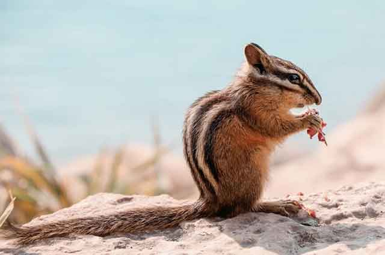
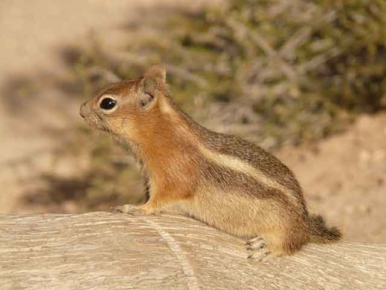
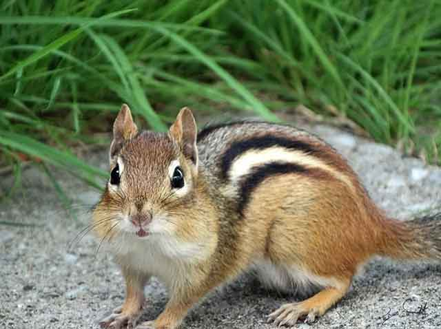
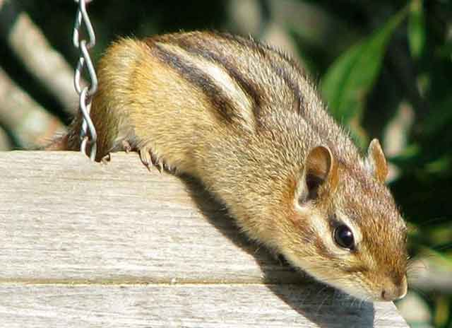
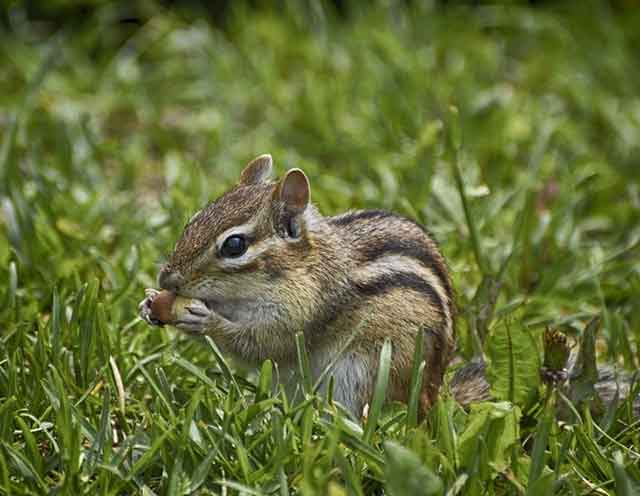
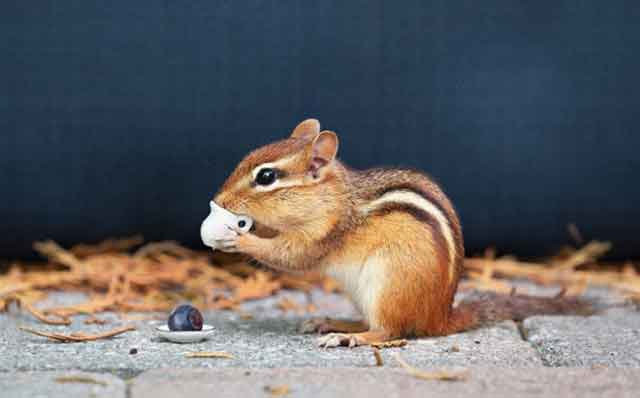

다람쥐를 반려동물로 키울 수 있을까?
반려동물과 함께하려는 사람들이 늘어나면서 이색 동물에 관한 관심도 점점 높아지고 있는 데요. 햄스터와 같이 작고 귀여운 '다람쥐'도 가정에서 반려동물로 키울 수 있는지 궁금해하는 사람들이 많습니다. 야생에서 다람쥐를 구했다면, '절대로 불가능하다.'라고 말씀을 드리고 싶습니다. 모든 동물이 그렇지만, 야생에서 자란 동물은 그 생활에 적응해 왔기에 가정에서 자라는 것이 불가능합니다. 하지만 처음부터 사람 손에 길러진 다람쥐라면 이야기는 다릅니다. 즉, 새끼 때부터 기르는 것은 가능하다는 것이죠.
다람쥐를 키우는 일은 쉽지 않습니다. 애초에 사람 손에 길러진 동물이 아니기 때문인데요. 따라서 만약 다람쥐를 키우게 된다고 하더라도 다람쥐에 대한 특성을 충분히 이해하고 그 환경을 따라주는 것이 중요합니다. 다람쥐는 가정에서 키우는 강아지만큼 주인의 말에 따라주지도 않을뿐더러 고양이처럼 독립적으로 행동하는 동물도 아니기에 더욱더 각별한 주의가 필요합니다.
다람쥐를 키우기로 했다면, 다람쥐 전용 케이지가 필요합니다. 다람쥐는 살아가는 환경에 영향을 많이 받는 동물로 깨끗하고 쾌적한 케이지는 물론 환기도 잘 되는 장소가 좋습니다. 더불어 케이지 바닥에는 신문지나 케이지 안을 보호해 줄 베딩 용품을 깔아주는 것이 좋습니다. 그리고 케이지 안을 높이고 휴식을 취할 수 있는 침구류를 준비하는 것이 좋습니다.
다람쥐는 외부 온도에 취약합니다. 그래서 외부 온도가 너무 낮아 케이지 안이 추워지면 먹이를 먹지 않고 정상 체온에 도달할 때까지 기다릴 가능성이 큽니다.
다람쥐는 활발한 동물입니다. 놀잇거리가 없다면 우울증에 걸릴 가능성이 크고 강아지가 산책하듯이 다람쥐 역시 케이지 밖을 돌아다닐 수 있도록 관리가 필요합니다. 물론, 핸들링이 가능한 수준에서 할 수 있는 일이겠죠!
어린 다람쥐는 딱딱한 음식을 먹을 수 없어 이유식이나 유제품을 먹어야 합니다. 태어난 지 3주까지는 하루에 6번씩 급여하여 성장을 돕고 8주가 넘으면 딱딱한 사료를 먹을 수 있게 됩니다. 콩 종류를 급여해 주면 됩니다. 간식은 아몬드, 호두 등 견과류가 좋습니다.
다람쥐 손톱과 이빨은 생각보다 날카롭습니다. 그래서 핸들링할 때는 긁히지 않도록 주의해야 하고, 케이지 밖을 탐방할 때는 집안의 가전, 가구 등이 긁히지 않도록 주의해야 합니다. 다람쥐 핸들링에 성공하기 전까지는 모든 것에 주의하며 본인은 물론 가족이 다치지 않도록 신경 써야 합니다!
다람쥐를 키우는 일은 어려운 일이 될 수 있습니다. 일반적인 반려동물과 달리 정보가 많지 않기 때문이죠. 그런데도 매력적이고 귀여운 다람쥐를 키우고 싶다면, 기본적인 특성을 충분히 숙지하고 항상 예의주시하여 다람쥐와의 즐거운 동거 생활을 만들어 보시길 바랍니다!
[출처] 다람쥐를 반려동물로 키울 수 있을까? ｜ 작성자 까미꾸러기